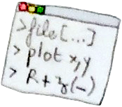

 SOFTWARE
MetEvolSim (Metabolome Evolution Simulator)


MetEvolSim (Metabolome Evolution Simulator) is a Python package providing numerical tools to simulate the long-term evolution of metabolic levels in kinetic models of metabolism. MetEvolSim takes as an input any SBML metabolic network model, as soon as the kinetic model is fully specified, and a stable steady-state exists. Steady-state concentrations are computed thanks to Copasi software.
MetEvolSim is distributed as a user friendly Pypi package. The full description of the simulation framework, first usage and some examples are provided on the Github page.
Publications and communications
• 2023: Proceedings of the National Academy of Sciences. 120 (35), e2302147120. (link).
• Feb. 2020: Evolutionary Systems Biology, Wellcome Genome Campus. (Cambridge, United Kingdom) (link)
MoRIS (Model of Routes of Invasive Spread)


MoRIS (Model of Routes of Invasive Spread) is a spatially explicit spread model designed to simulate invasive species dispersal by transport at local to regional spatial scales. MoRIS is an innovative, yet simple model, taking into account the road network topology to influence the direction of dispersal events. MoRIS is designed to minimize a priori making (e.g., expert knowledge), to enable the estimation of human-mediated dispersal parameters based on a simple presence/absence locations dataset and to produce predictive maps of spread.
To learn how to use MoRIS, first install the latest release, and follow the installation instructions and the first usage guide. MoRIS software requires input files built in a certain way. To learn how to build this files, read the input files tutorial.
Publications and communications
• 2023: Ecography. in press. (link)
• Aug. 2016: Proceedings of IENE 2016 conference. 5th International Conference on Ecology and Transportation: Integrating Transport Infrastructures with Living Landscapes (Lyon, France). (link)
• Jul. 2015: Proceedings of World Conference on Natural Resource Modeling (Bordeaux, France). (link)
Tribolium castaneum multi-omics pipeline

The objective of this pipeline is to associate signals of selection at the genomic and gene expression levels. The originality of this approach is to both detect allele frequency changes (AFCs) and gene expression changes through generations, using the same individual-level RNA-seq dataset. Recent studies have demonstrated the possibility to detect SNPs from RNA-seq data, assuming that only expressed regions of the genome are available. The approach covers a vast amount of methodologies, including variants call, the calculation of AFCs and the genetic map, read counts or the detection of gene expression modules..
Publications and communications
• One manuscript in preparation.
σFGM (Fisher's geometric model with evolvable phenotypic noise)


σFGM simulates adaptive evolution in Fisher's geometric model with an evolvable phenotypic noise. A population of individuals is placed under stabilizing selection and must evolve towards a fitness optimum. The fitness function is configurable and can adopt non-Gaussian shapes. Phenotypic noise is modeled by an evolvable multivariate normal distribution. Simulations are fully configurable. See the installation instructions and a first usage, and Rocabert et al. (2020) for a full description of the underlying mathematical model.
Publications and communications
• 2020: Evolution 74 (10), 2221-2237. (link)
• Nov. 2019: Conference EvoLyon 2019. (link)
Evo2Sim (Evolution of Evolution Simulator)


Evo2Sim (Evolution of Evolution Simulator) is a multi-scale evolutionary model which takes into account the (ultra-fast) dynamics of metabolic networks, the (fast) dynamics of gene regulatory networks, the (medium to slow) dynamics of resources in the ecosystem and the (slow) evolutionary dynamics of genes and genome structure. Evo2Sim is designed to perform In Silico Experimental Evolution (ISEE) experiments, that mimick real experimental evolution protocols.
The software is equipped with the whole tool case of experimental setups, competition assays, phylogenetic analysis. Simulations can be analyzed thanks to the HTML viewer (see the example), tracking and displaying on the fly every simulation events, from the phylogeny to ecological interactions.
Evo2Sim was first developed during the EvoEvo project (www.evoevo.eu), funded by the European Commission (FP7-ICT-610427, FET Proactive: Evolving Living Technologies).
Publications and communications
• 2017: PLoS computational biology, 13(3), e1005459. (link)
• Sep. 2017: Proceedings of the 14th European Conference on Artificial Life (ECAL) (Villeurbanne, France). (link)
• Jul. 2015: Proceedings of the EvoEvo Workshop, Satellite workshop of ECAL 2015 (York, UK). (link)
Easy-to-use C++ library for the live tracking of lineage and coalescence trees in individual-based forward-in-time simulations.
puutools (live tracking of lineage and coalescence trees)


Puutools is a C++ library which allows to dynamically create, track and manage lineage and/or coalescence trees during individual-based forward-in-time simulations of evolution.
With puutools, it is possible to update the lineage and/or the coalescence tree of a population at each generation during a simulation, and to track and recover evolutionary events at any time. puutools is easy to deploy and versatile, providing the user with a small set of integrated functions.
puutools is an all-in-one library. It does not depend on third-party packages, and its code is kept simple and light. By the way, puutools comes as and header-only library, so specific compilation is not needed.
The code of puutools has primarily been implemented and optimized during the European project EvoEvo (FP7-ICT-610427), as part of the Evo2Sim software (see Rocabert et al. 2017). The code has also been used in σFGM framework (see Rocabert et al. 2020). To date, puutools is distributed as a static library for C++ developers. We plan to provide a Python-binding in a future version.
You will find a complete walk-through example to get used to the main functionalities of puutools.